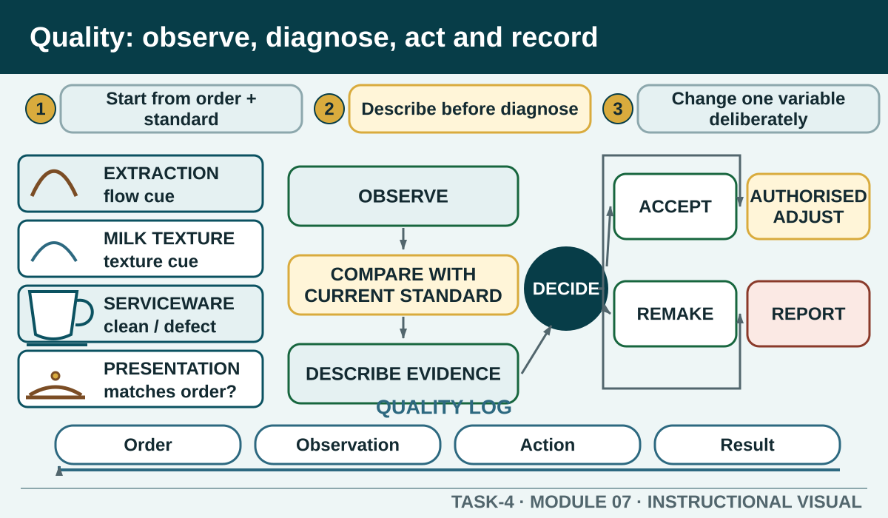

Evaluate food and beverage work against the current order and product standard, distinguish observations from assumptions and take only authorised corrective or referral action.
Learning intention
What success looks like
I can describe quality using observable product and service evidence.
I can separate an observation from a possible cause.
I can explain why one authorised variable is checked at a time.
I can choose between accept, adjust, remake and report without inventing a local tolerance or repair.
Core ideas
Build the complete picture
1
Quality begins with the order and current standard
2
Describe before diagnosing
3
Variables interact, so change deliberately
4
Use an accept, adjust, remake or report decision
Visual explanation
Quality: observe, diagnose, act and record

Students practise describing evidence before choosing a controlled response.
Worked example
Quality begins with the order and current standard
A quality judgement needs a reference. Start with the confirmed order, authorised recipe, presentation standard and workplace procedure. Relevant evidence may include product identity, modification, appearance, aroma, body, taste, strength, texture, volume, temperature, serviceware, timing and clean handover.
A beverage looks attractive but is in the wrong serviceware for the current product card. Appearance alone does not make the complete order correct.
Question the room
Which statement is an observation rather than an unsupported cause?
The machine is faulty.
The flow appeared faster than the current reference and the crema colour changed during this extraction.
The previous student changed the grinder incorrectly.
Apply
Coffee quality diagnosis
Work only from observable product and workflow evidence. Do not change machine settings unless the teacher has authorised that adjustment.
Choose the response for each observation.
Read the feedback.
Write one quality log entry: order, observation, action, result, person notified.
Exit ticket
Action · evidence · next step
Analyse a teacher-issued quality scenario. Record the observation, identify the standard used for comparison, list possible variables without declaring a cause, and justify the authorised accept, adjust, remake or report decision.
One action I would take
The evidence I would check
The person or source I would confirm with
My next improvement
1 of 8
Speaker notes and delivery prompts
Open with this purpose: Evaluate food and beverage work against the current order and product standard, distinguish observations from assumptions and take only authorised corrective or referral action.
Use Quality begins with the order and current standard to connect prior learning to the first observable workplace decision.
Model Quality begins with the order and current standard by walking through this supplied example: A beverage looks attractive but is in the wrong serviceware for the current product card. Appearance alone does not make the complete order correct.
Ask: Which statement is an observation rather than an unsupported cause? Confirm the strongest response as The flow appeared faster than the current reference and the crema colour changed during this extraction..
Listen for this misconception: Not yet. This names a cause without showing the evidence needed to establish it.
Move into Coffee quality diagnosis, then collect the saved response and finish with the source boundary: Authorised source note: Observable product quality, single-variable reasoning, presentation checks, waste, equipment care and fault referral are source-supported. Exact target values, tolerances, correction settings and maintenance procedures remain local. Source references: TEACHER-COFFEE-TERMS, SUPPORTING-COFFEE, TGA-SITHFAB024, TGA-SITHFAB025, TGA-SITHFAB027, SITE-T4-V2.